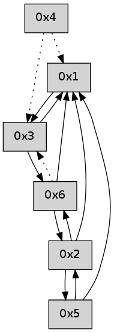

>> << IDX [start] -100 -25 -5 +0 +5 +25 +100 [480.00506711]
 Previous packets
----------------------------------------------------------------------
475.034023 beacon01(adaf) #0 coord=01,02,05,03,04,06 cycle=432.0ms assoc
-- color-indic=0 64 07 be
475.043984 beacon02(adaf) #0 coord=01,02,05,03,04,06 cycle=432.0ms assoc 64 56 41
475.053984 beacon05(adaf) #0 coord=01,02,05,03,04,06 cycle=432.0ms assoc 64 f0 6b
475.063984 beacon03(adaf) #0 coord=01,02,05,03,04,06 cycle=432.0ms assoc 64 6c 4f
475.073984 beacon04(adaf) #0 coord=01,02,05,03,04,06 cycle=432.0ms assoc 64 ca 65
475.083985 beacon06(adaf) #0 coord=01,02,05,03,04,06 cycle=432.0ms assoc 64 be 79
475.095646 [Hello(3): seq=273 sym=6,1 sysInfo= stat=6:5,0,0,0/1:11,0,0,0]
----------------------------------------------------------------------
475.526130 beacon01(adaf) #0 coord=01,02,05,03,04,06 cycle=432.0ms assoc
-- color-indic=0 64 4b 0e
475.536092 beacon02(adaf) #0 coord=01,02,05,03,04,06 cycle=432.0ms assoc 64 1a f1
475.546090 beacon05(adaf) #0 coord=01,02,05,03,04,06 cycle=432.0ms assoc 64 bc db
475.556091 beacon03(adaf) #0 coord=01,02,05,03,04,06 cycle=432.0ms assoc 64 20 ff
475.566092 beacon04(adaf) #0 coord=01,02,05,03,04,06 cycle=432.0ms assoc 64 86 d5
475.576092 beacon06(adaf) #0 coord=01,02,05,03,04,06 cycle=432.0ms assoc 64 f2 c9
475.587738 [Hello(4): seq=274 asym=3,1 sysInfo= stat=3:5,0,0,0/1:8,0,0,0]
475.590223 [Hello(1): seq=173 sym=5,2,3 sysInfo= stat=5:5,0,0,0/2:2,0,0,0/3:5,0,0,0]
----------------------------------------------------------------------
476.018239 beacon01(adaf) #0 coord=01,02,05,03,04,06 cycle=432.0ms assoc
-- color-indic=0 64 8f 61
476.028199 beacon02(adaf) #0 coord=01,02,05,03,04,06 cycle=432.0ms assoc 64 de 9e
476.038200 beacon05(adaf) #0 coord=01,02,05,03,04,06 cycle=432.0ms assoc 64 78 b4
476.048202 beacon03(adaf) #0 coord=01,02,05,03,04,06 cycle=432.0ms assoc 64 e4 90
476.058199 beacon04(adaf) #0 coord=01,02,05,03,04,06 cycle=432.0ms assoc 64 42 ba
476.068200 beacon06(adaf) #0 coord=01,02,05,03,04,06 cycle=432.0ms assoc 64 36 a6
476.079852 [Hello(3): seq=274 sym=6,1 sysInfo= stat=6:6,0,0,0/1:12,0,0,0]
----------------------------------------------------------------------
476.510347 beacon01(adaf) #0 coord=01,02,05,03,04,06 cycle=432.0ms assoc
-- color-indic=0 64 c2 66
476.520308 beacon02(adaf) #0 coord=01,02,05,03,04,06 cycle=432.0ms assoc 64 93 99
476.530308 beacon05(adaf) #0 coord=01,02,05,03,04,06 cycle=432.0ms assoc 64 35 b3
476.540309 beacon03(adaf) #0 coord=01,02,05,03,04,06 cycle=432.0ms assoc 64 a9 97
476.550308 beacon04(adaf) #0 coord=01,02,05,03,04,06 cycle=432.0ms assoc 64 0f bd
476.560310 beacon06(adaf) #0 coord=01,02,05,03,04,06 cycle=432.0ms assoc 64 7b a1
476.571970 [Hello(4): seq=275 asym=3,1 sysInfo= stat=3:6,0,0,0/1:9,0,0,0]
476.575682 [Hello(1): seq=174 sym=5,2,3 sysInfo= stat=5:5,0,0,0/2:2,0,0,0/3:6,0,0,0]
----------------------------------------------------------------------
477.002455 beacon01(adaf) #0 coord=01,02,05,03,04,06 cycle=432.0ms assoc
-- color-indic=0 64 06 09
477.012419 beacon02(adaf) #0 coord=01,02,05,03,04,06 cycle=432.0ms assoc 64 57 f6
477.022418 beacon05(adaf) #0 coord=01,02,05,03,04,06 cycle=432.0ms assoc 64 f1 dc
477.032417 beacon03(adaf) #0 coord=01,02,05,03,04,06 cycle=432.0ms assoc 64 6d f8
477.042417 beacon04(adaf) #0 coord=01,02,05,03,04,06 cycle=432.0ms assoc 64 cb d2
477.052417 beacon06(adaf) #0 coord=01,02,05,03,04,06 cycle=432.0ms assoc 64 bf ce
477.064079 PARSE ERROR************************
Traceback (most recent call last):
File "PacketAnalysis.py", line 167, in showOperaPacket
structPacket = OperaPacketParse.parsePacket(rawPacket)
File "../../pkg-python/HipSens/Core/OperaPacketParse.py", line 461, in parsePacket
return parseHelloMessage(data)
File "../../pkg-python/HipSens/Core/OperaPacketParse.py", line 109, in parseHelloMessage
sysInfo,stability,colorInfo = struct.unpack("!HBB", linkList[0:4])
error: unpack requires a string argument of length 4
48 18 03 00 01 13 00 02 02 04 06 00 01 00 53 04 00 00 00 00 4c 04 00 07 00 0d 53 da
----------------------------------------------------------------------
477.494562 beacon01(adaf) #0 coord=01,02,05,03,04,06 cycle=432.0ms assoc
-- color-indic=0 64 4a b9
477.504523 beacon02(adaf) #0 coord=01,02,05,03,04,06 cycle=432.0ms assoc 64 1b 46
477.514523 beacon05(adaf) #0 coord=01,02,05,03,04,06 cycle=432.0ms assoc 64 bd 6c
477.524523 beacon03(adaf) #0 coord=01,02,05,03,04,06 cycle=432.0ms assoc 64 21 48
477.534523 beacon04(adaf) #0 coord=01,02,05,03,04,06 cycle=432.0ms assoc 64 87 62
477.544524 beacon06(adaf) #0 coord=01,02,05,03,04,06 cycle=432.0ms assoc 64 f3 7e
477.556179 [Hello(4): seq=276 asym=3,1 sysInfo= stat=3:7,0,0,0/1:10,0,0,0]
477.558788 [Hello(1): seq=175 sym=2,3 sysInfo= stat=2:2,0,0,0/3:7,0,0,0]
----------------------------------------------------------------------
477.986669 beacon01(adaf) #0 coord=01,02,05,03,04,06 cycle=432.0ms assoc
-- color-indic=0 64 8e d6
477.996630 beacon02(adaf) #0 coord=01,02,05,03,04,06 cycle=432.0ms assoc 64 df 29
478.006630 beacon05(adaf) #0 coord=01,02,05,03,04,06 cycle=432.0ms assoc 64 79 03
478.016631 beacon03(adaf) #0 coord=01,02,05,03,04,06 cycle=432.0ms assoc 64 e5 27
478.026632 beacon04(adaf) #0 coord=01,02,05,03,04,06 cycle=432.0ms assoc 64 43 0d
478.036631 beacon06(adaf) #0 coord=01,02,05,03,04,06 cycle=432.0ms assoc 64 37 11
478.048286 [Hello(3): seq=276 sym=6,1 sysInfo= stat=6:8,0,0,0/1:14,0,0,0]
----------------------------------------------------------------------
478.478777 beacon01(adaf) #0 coord=01,02,05,03,04,06 cycle=432.0ms assoc
-- color-indic=0 64 d0 b7
478.488737 beacon02(adaf) #0 coord=01,02,05,03,04,06 cycle=432.0ms assoc 64 81 48
478.498740 beacon05(adaf) #0 coord=01,02,05,03,04,06 cycle=432.0ms assoc 64 27 62
478.508740 beacon03(adaf) #0 coord=01,02,05,03,04,06 cycle=432.0ms assoc 64 bb 46
478.518739 beacon04(adaf) #0 coord=01,02,05,03,04,06 cycle=432.0ms assoc 64 1d 6c
478.528740 beacon06(adaf) #0 coord=01,02,05,03,04,06 cycle=432.0ms assoc 64 69 70
478.540372 [Hello(4): seq=277 asym=3,1 sysInfo= stat=3:8,0,0,0/1:11,0,0,0]
478.545734 [Hello(1): seq=176 sym=3 sysInfo= stat=3:8,0,0,0]
----------------------------------------------------------------------
478.970888 beacon01(adaf) #0 coord=01,02,05,03,04,06 cycle=432.0ms assoc
-- color-indic=0 64 14 d8
478.980848 beacon02(adaf) #0 coord=01,02,05,03,04,06 cycle=432.0ms assoc 64 45 27
478.990850 beacon05(adaf) #0 coord=01,02,05,03,04,06 cycle=432.0ms assoc 64 e3 0d
479.000850 beacon03(adaf) #0 coord=01,02,05,03,04,06 cycle=432.0ms assoc 64 7f 29
479.010849 beacon04(adaf) #0 coord=01,02,05,03,04,06 cycle=432.0ms assoc 64 d9 03
479.020850 beacon06(adaf) #0 coord=01,02,05,03,04,06 cycle=432.0ms assoc 64 ad 1f
479.032502 [Hello(3): seq=277 sym=6,1 sysInfo= stat=6:9,0,0,0/1:15,0,0,0]
----------------------------------------------------------------------
479.462996 beacon01(adaf) #0 coord=01,02,05,03,04,06 cycle=432.0ms assoc
-- color-indic=0 64 58 68
479.472957 beacon02(adaf) #0 coord=01,02,05,03,04,06 cycle=432.0ms assoc 64 09 97
479.482958 beacon05(adaf) #0 coord=01,02,05,03,04,06 cycle=432.0ms assoc 64 af bd
479.492957 beacon03(adaf) #0 coord=01,02,05,03,04,06 cycle=432.0ms assoc 64 33 99
479.502959 beacon04(adaf) #0 coord=01,02,05,03,04,06 cycle=432.0ms assoc 64 95 b3
479.512958 beacon06(adaf) #0 coord=01,02,05,03,04,06 cycle=432.0ms assoc 64 e1 af
479.524349 [Hello(1): seq=177 sym=3 sysInfo= stat=3:9,0,0,0]
479.528276 [Hello(4): seq=278 asym=3,1 sysInfo= stat=3:9,0,0,0/1:12,0,0,0]
----------------------------------------------------------------------
479.955104 beacon01(adaf) #0 coord=01,02,05,03,04,06 cycle=432.0ms assoc
-- color-indic=0 64 9c 07
479.965065 beacon02(adaf) #0 coord=01,02,05,03,04,06 cycle=432.0ms assoc 64 cd f8
479.975065 beacon05(adaf) #0 coord=01,02,05,03,04,06 cycle=432.0ms assoc 64 6b d2
479.985066 beacon03(adaf) #0 coord=01,02,05,03,04,06 cycle=432.0ms assoc 64 f7 f6
479.995066 beacon04(adaf) #0 coord=01,02,05,03,04,06 cycle=432.0ms assoc 64 51 dc